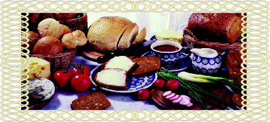

Wszelkie uwagi dotycz±ce naszego serwisu internetowego proszê kierowaæ na adres piekarniabaton@wp.pl
Zalecana rozdzielczo¶æ to 800x600 lub wiêksza.
Ostatnia aktualizacja strony nast±pi³a 5 luty 2000r
(C) 1999 BATON - Firma Produkcyjno-Handlowa.
Opracowanie strony internetowej - Natasza Blaszczak.
Wszystkie znaki firmowe i nazwy produktów na stronach serwera sa wy³±czn±
w³asno¶ci± ich posiadaczy.
All other brand and product names within this page are the property of
their respective owners.